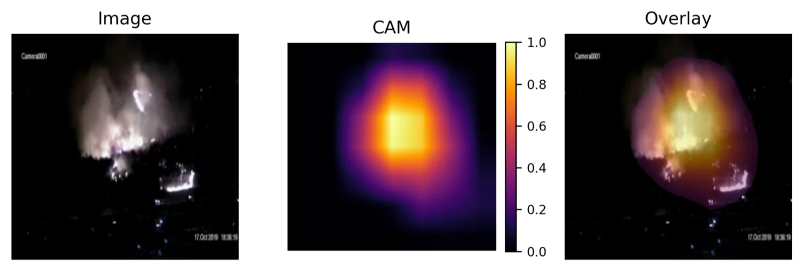
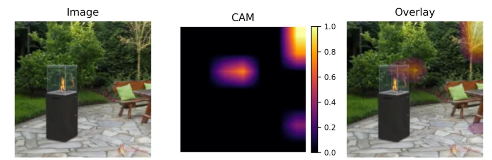
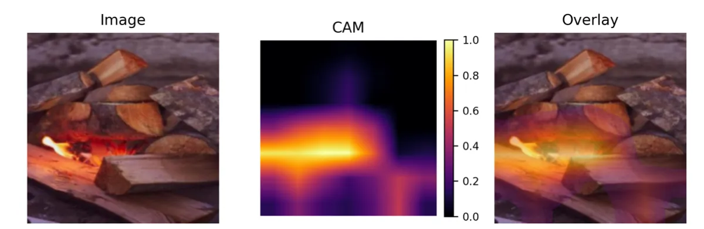

Fire detection with synthetic data
A fire classifier trained on 2,000 real and 2,000 synthetic indoor images scored F1 0.984 on a 500-image indoor test set, slightly above a model trained on twice as many real images, which means half of the hard-to-collect real fire images could be replaced with rendered ones in this setting.
- Context
- MSc Data Science dissertation, University of Bristol, on a project set by SYNOPTIX Ltd
- My part
- Sole author: experiment design, data pipeline, training, evaluation and Grad-CAM analysis
- Date
- Submitted August 2025
- Grade
- 75%
- Stack
- Python, PyTorch, torchvision (ResNet-50), scikit-learn, matplotlib, Google Colab
- Status
- Research. Recommended for deployment in the report, not deployed

- 0.984 F1 score Balances missed fires against false alarms. Real-only model with twice the real images: 0.980
- 0.972 MCC Matthews correlation, which stays honest when the classes are uneven. Real-only: 0.964
- 2 / 5 False alarms / missed fires Out of 279 no-fire and 221 fire images. Real-only: 6 / 3
All three measured on the PLOS ONE indoor test split (500 images) at a fixed 0.5 decision threshold, from one training run.
Problem
Real images of indoor fires are rare, unsafe to stage and slow to label, so a camera-based fire detector for factories and warehouses is always short of the data it needs most. SYNOPTIX wanted to know whether synthetic images, which are rendered fire scenes that come with exact labels, could fill that gap without costing accuracy.
I turned that into four questions: can synthetic data replace or only complement real images, which mix of the two works best, does synthetic data help when a model trained outdoors is used indoors, and can a model reach the accuracy needed for deployment with fewer real indoor images.
Approach
I treated it as binary image classification (fire or no fire), because a single yes or no per frame is light enough for an early-warning system, and used a ResNet-50 pretrained on ImageNet. The work ran in four phases so that each one changed only one thing:
- Phase 1, frozen outdoor models. Only the final layer was trained, comparing real-only, synthetic-only and mixes of 25, 50 and 75% synthetic images, tested on D-Fire.
- Phase 2, fine-tuned outdoor models. The last residual block was retrained as well, for real-only, synthetic-only and the 50/50 mix.
- Phase 3, outdoor to indoor. The Phase 2 models were tested on indoor PLOS ONE images without retraining, to measure domain shift, which basically means how much a model suffers when the scenes look different from its training data.
- Phase 4, indoor. A model trained on 2,000 real PLOS ONE images plus 2,000 synthetic SYN-FIRE images, against one trained on real indoor images only.
The real data came from D-Fire (21,527 outdoor images) and PLOS ONE (5,000 indoor images), and the synthetic data from Yunnan MSFFD (3,946 outdoor scenes rendered in Unreal Engine 5) and SYN-FIRE (2,030 indoor renders).
Key decision: fix the dataset size so only the mix changes
Every mixed training set had the same number of images (5,260 outdoor, 4,000 indoor), drawn with one fixed random seed, so when one mix beat another the difference came from what was in the data and not from how much of it there was. The one deliberate exception was the real-only outdoor baseline, which used the full real training pool so that it could act as the ceiling to compare against.
Results
Mixing real and synthetic images beat synthetic-only training in every phase. Outdoors, the real-only models stayed ahead, but they used about five times as many real images. Synthetic-only training on the frozen model (Phase 1) collapsed on real photos, calling almost every outdoor image a fire (specificity 0.090), because the synthetic sets are mostly or entirely fire-positive, so the model never learned what a normal scene looks like.
The outdoor-to-indoor test is where the mix helped most. The fine-tuned real-only model kept its precision indoors but its recall fell from 0.930 to 0.756, so it missed about a quarter of indoor fires, while the 50/50 model held recall at 0.796 and scored F1 0.878 against 0.852. Indoors, the mix came out ahead: the 50/50 model trained on 2,000 real images edged out the real-only model trained on 4,000.
| Phase and model | Test set | F1 | MCC | False alarms | Missed fires |
|---|---|---|---|---|---|
| 1 Real-only | D-Fire | 0.852 | 0.804 | 116 | 201 |
| 1 50/50 | D-Fire | 0.781 | 0.708 | 205 | 269 |
| 2 Real-only | D-Fire | 0.945 | 0.926 | 43 | 78 |
| 2 50/50 | D-Fire | 0.916 | 0.887 | 83 | 102 |
| 3 Real-only | PLOS ONE | 0.852 | 0.776 | 4 | 54 |
| 3 50/50 | PLOS ONE | 0.878 | 0.809 | 4 | 45 |
| 4 Real-only | PLOS ONE | 0.980 | 0.964 | 6 | 3 |
| 4 50/50 (recommended) | PLOS ONE | 0.984 | 0.972 | 2 | 5 |
Evaluation context
The indoor results use PLOS ONE's own test split of 500 images (221 fire, 279 no fire), kept apart from training. The outdoor results use a fixed D-Fire test split of about 4,300 images. Every model used a 0.5 decision threshold, F1 to pick the best checkpoint, and the same training recipe: 5 epochs, Adam, learning rate 0.0001, batch size 32 and one random seed (42).

Limitations and next steps
- The mixed model raised fewer false alarms than the real-only one (2 against 6) but missed more fires (5 against 3), so for a safety system the threshold should be tuned per site from the precision-recall curve rather than left at 0.5.
- Every result comes from one random seed and 5 epochs, so I have not measured how much the numbers move between runs, and longer training with repeated seeds is the first thing I would add.
- The synthetic sets were mostly or entirely fire-positive, so every no-fire example came from real data, and synthetic no-fire scenes would test the idea more fairly.
- I skipped ImageNet normalisation after it made early fine-tuning unstable, which may have held back the fine-tuned models.
- The work covers single-image classification on public datasets only. Detection, segmentation or video models that use motion, tested on the partner's own camera footage, would be the next step towards a real deployment.
